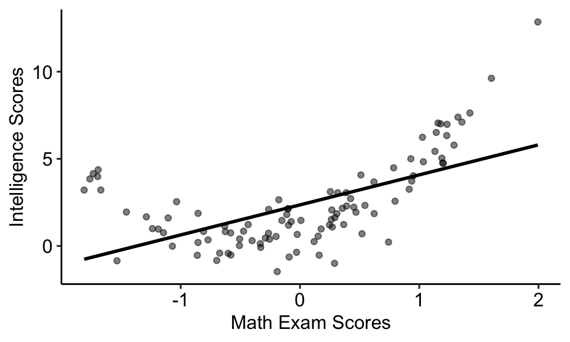
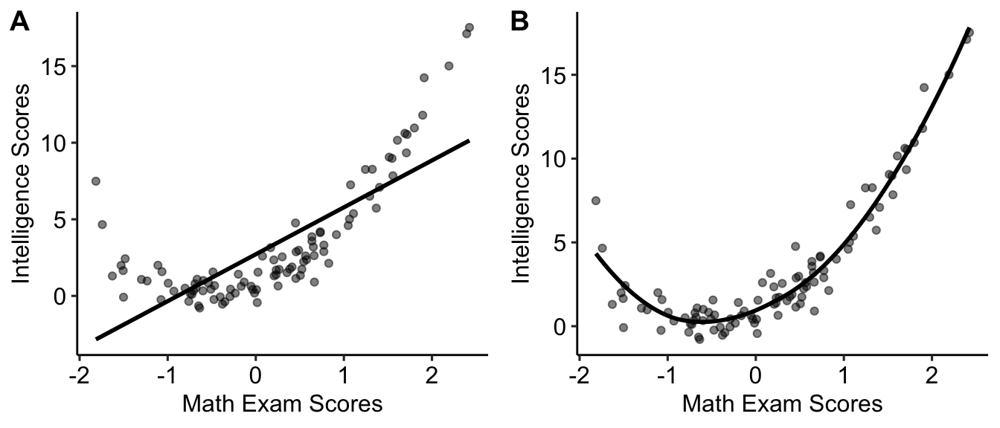
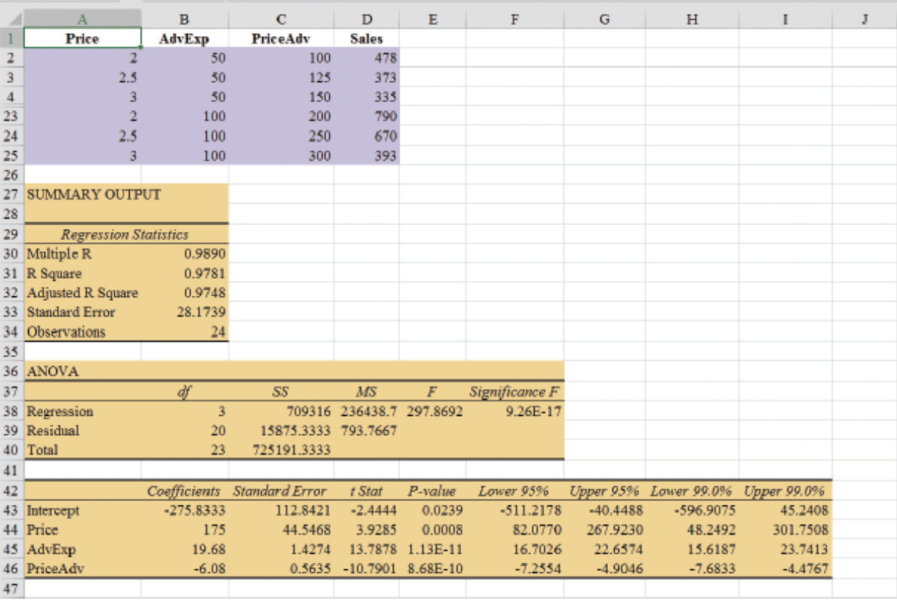
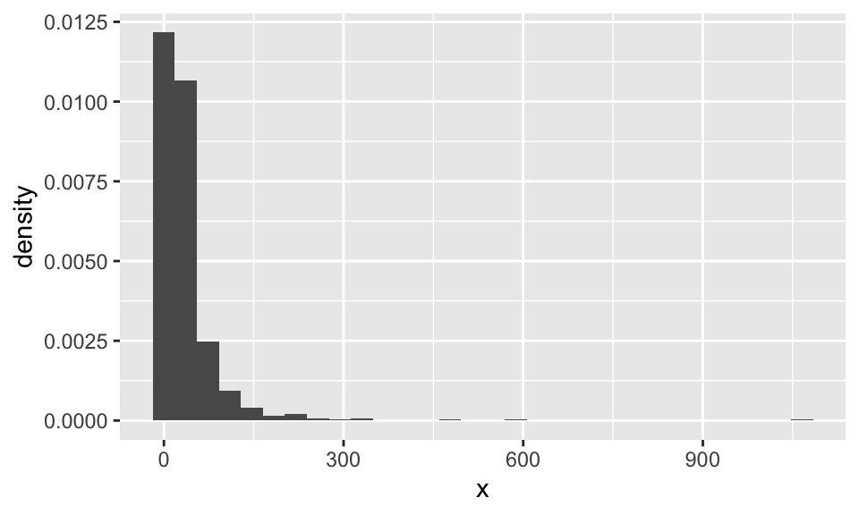
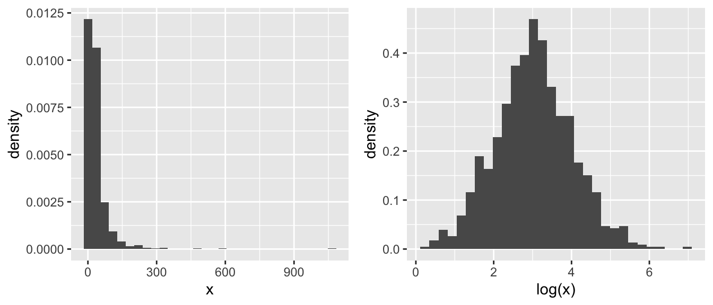
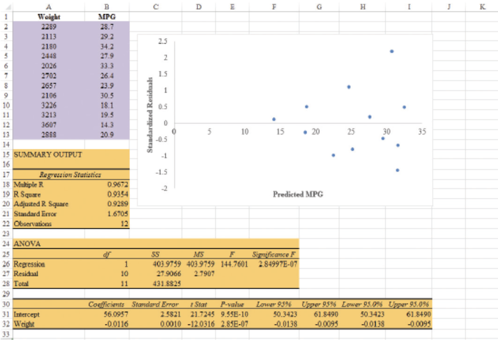
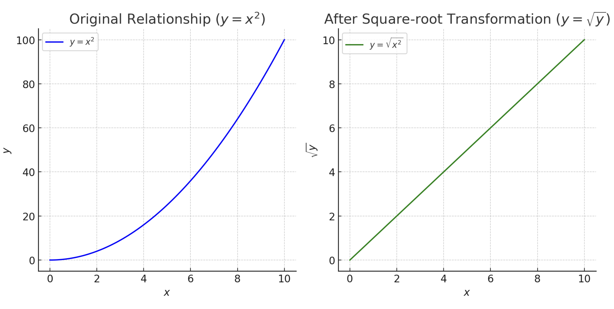
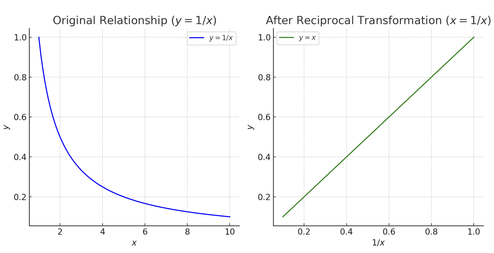

MGMT 30500: Business Statistics
Regression Analysis: Model Building
Overview
- General Linear Model
- Modeling Curvilinear Relationships
- Interaction
- Transformations
- Nonlinear Models That Are Intrinsically Linear
Determining When to Add or Delete Variables
Variable Selection Procedures
- Stepwise Method
- Forward Method
- Backward Method
- Best Subsets Method
General Linear Model
General Linear Model
Models in which the parameters \((\beta_0, \beta_1, \ldots, \beta_p)\) all have exponents of one are called linear models.
A general linear model involving \(p\) independent variables (\(z_i\)’s) is:
\[ y = \beta_0 + \beta_1 z_1 + \beta_2 z_2 + \ldots + \beta_p z_p + \epsilon \]
where each independent variable \(z_i\) is a (linear or nonlinear) function of \(x_1, x_2, \ldots, x_k\) (the variables for which data have been collected).
- Here, \(y\) can be a function of the original response variable as well.
General Linear Model
The simplest case is when we have collected data for just one variable \(x_1\) and want to estimate \(y\) by using a straight-line relationship. In this case \(z_1 = x_1\).
This model is called a simple first-order model with one predictor variable.
\[ y = \beta_0 + \beta_1 x_1 + \epsilon \]
Modelling Curvilinear Relationships
Modelling Curvilinear Relationships
Modelling Curvilinear Relationships
Some non-linear models can be expressed as a general linear model.
To account for a curvilinear relationship, we might consider a second-order model with one predictor variable \((x_1)\):
\[ y = \beta_0 + \beta_1 x_1 + \beta_2 x_1^2 + \epsilon \]
- It is a linear model because we can set: \(z_1 = x_1\) and \(z_2 = x_1^2\).
Modelling Curvilinear Relationships

\[ y = \beta_0 + \beta_1 x_1 + \epsilon \]
\[ y = \beta_0 + \beta_1 x_1 + \beta_2 x_1^2 + \epsilon \]
Interpretation of Independent Variable Effect in a Second-Order Model
\(\beta_1\): Represents the linear effect of \(x_1\) on \(y\). It gives the initial (or marginal) change in \(y\) for a one-unit increase in \(x_1\) when \(x_1^2\) is held constant.
\(\beta_2\): Represents the quadratic effect of \(x_1\) on \(y\). It determines whether the curve opens upwards \((\beta_2 > 0)\) or downwards \((\beta_2 < 0)\).
Marginal Effect of \(x_1\)
- The overall effect of \(x_1\) on \(y\) can be expressed as:
\[ \frac{dy}{dx_1} = \beta_1 + 2\beta_2 x_1 \]
This shows that the effect of \(x_1\) on \(y\) changes as \(x_1\) increases or decreases due to the presence of the quadratic term \(x_1^2\).
Instead of a constant change (as in linear models), the presence of \(2\beta_2 x_1\) shows a varying slope depending on the value of \(x_1\).
Practical Interpretation
If \(\beta_2 > 0\), \(y\) increases at an increasing rate as \(x_1\) increases, resulting in a U-shaped curve.
If \(\beta_2 < 0\), \(y\) increases at a decreasing rate and then decreases, resulting in an inverted U-shaped curve.
The effect of \(x_1\) should always be considered in light of both \(\beta_1\) and \(\beta_2\).
Interaction
Interaction
- If the original data set consists of observations for \(y\) and two independent variables, \(x_1\) and \(x_2\), we might develop a second-order model with two predictor variables \((x_1\) and \(x_2)\) with interaction:
\[ y = \beta_0 + \beta_1 x_1 + \beta_2 x_2 + \beta_3 x_1 x_2 + \epsilon \]
The variable \(x_1 x_2\) is added to account for the potential effects of the two variables acting together.
\(\beta_3\) measures the interaction effect.
Example: Interaction
Lets check the regression study conducted by Tyler Personal Care for one of its new shampoo products. Two factors believed to have the most influence on sales are:
Unit selling price
Advertising expenditure
To investigate the effects of these two variables on sales, prices of $2.00, $2.50, and $3.00 were paired with advertising expenditures of $50,000 and $100,000 in 24 test markets.
Example: Difference in Mean Sales
Mean Sales (1000s) for the Tyler Personal Care Example
| Advertising Expenditure | $2.00 | $2.50 | $3.00 |
|---|---|---|---|
| $50,000 | 461 | 364 | 332 |
| $100,000 | 808 | 646 | 375 |
With a price of $2.00, the difference in mean sales between advertising expenditures of $50,000 and $100,000 is:
\[ 808,000 - 461,000 = 347,000 \, units \]
When the price is $2.50, the difference is:
\[ 646,000 - 364,000 = 282,000 \, units \]
When the price is $3.00, the difference is:
\[ 375,000 - 332,000 = 43,000 \, units \]
Clearly, the difference in mean sales between advertising expenditures depends on the price of the product. The effect of increased advertising expenditure diminishes at higher selling prices, providing evidence of interaction between the price and advertising expenditure variables.
Example: Regression Model with Interaction
To account for the effect of interaction, we use the following regression model:
\[ y = \beta_0 + \beta_1 x_1 + \beta_2 x_2 + \beta_3 x_1 x_2 + \epsilon \]
Where:
- \(y\) = unit sales (1000s)
- \(x_1\) = price ($)
- \(x_2\) = advertising expenditure ($1000s)
Example: Estimated Regression Equation
Using the estimated regression equation:
\[ \text{Sales} = -275.8333 + 175 \, \text{Price} + 19.68 \, \text{AdvExp} - 6.08 \, \text{PriceAdv} \]
Where:
- Sales = unit sales (1000s)
- Price = price of the product ($)
- AdvExp = advertising expenditure ($1000s)
- PriceAdv = interaction term (Price times AdvExp)
Example: Significance of Interaction

The \(p\)-value corresponding to the \(t\)-test for PriceAdv is 0.0000, which indicates significant interaction between the price of the product and the advertising expenditure.
Example: Interpretation of Coefficients
\(\beta_0\): Intercept. Represents the expected value of \(y\) when \(x_1\) and \(x_2\) are zero.
\(\beta_1\): Effect of \(x_1\) on \(y\) when \(x_2 = 0\).
\(\beta_2\): Effect of \(x_2\) on \(y\) when \(x_1 = 0\).
\(\beta_3\): Interaction effect between \(x_1\) and \(x_2\). Indicates how the relationship between \(x_1\) and \(y\) changes with different values of \(x_2\), and vice-versa.
Example: Marginal Effects
- Effect of \(x_1\):
\[ \frac{\partial y}{\partial x_1} = \beta_1 + \beta_3 x_2 \]
- Effect of \(x_2\):
\[ \frac{\partial y}{\partial x_2} = \beta_2 + \beta_3 x_1 \]
- The effect of \(x_1\) on \(y\) depends on \(x_2\), and the effect of \(x_2\) on \(y\) depends on \(x_1\).
Example: Interpretation of Interaction Effect
If \(\beta_3 > 0\), a positive (or negative) effect of \(x_1\) on \(y\) increases as \(x_2\) increases.
If \(\beta_3 < 0\), a positive (or negative) effect of \(x_1\) on \(y\) decreases as \(x_2\) increases.
Example: Coefficient Interpretation
Price: \(175\) - When AdvExp is zero, a one-unit increase in Price leads to an expected increase of 175 units in \(y\).
AdvExp: \(19.68\) - When Price is zero, a one-unit increase in AdvExp results in an expected increase of 19.68 units in \(y\).
PriceAdv: \(-6.08\)- Interaction effect: A one-unit increase in AdvExp decreases the effect of Price on \(y\) by 6.08 units (and vice versa).
Interpretation of Interaction Effect
The interaction term \(\beta_3\) (PriceAdv) is negative.
- As AdvExp increases, the positive effect of Price on \(y\) decreases.
- Suggests diminishing returns on Price when AdvExp is already high (or vice versa).
An increase in Advertising Expenditures may lead to higher sales, but this effect diminishes as more the Price increases.
The interaction effect is negative and significant, showing that the combined effect of Price and AdvExp on \(y\) is not purely additive.
Takeaway: Adjustments to Price or AdvExp should consider their interaction, as increasing both may not yield linear increases in \(y.\)
Log Transformation
Original Data

Log Transformation

Possibile Logarithmic Transformations
| X | logX | |
|---|---|---|
Y |
linear \(\hat{Y}_i = \alpha + \beta X_i\) |
linear-log \(\hat{Y}_i = \alpha + \beta \log X_i\) |
logY |
log-linear \(\log \hat{Y}_i = \alpha + \beta X_i\) |
log-log \(\log \hat{Y}_i = \alpha + \beta \log X_i\) |
What Changes After the Transformation
You should be cautious when interpreting and reporting the findings of the model.
The interpretation varies based on the variable that was transformed (dependent variable, independent variable, or both).
As a general rule, you should always keep in mind the logic:
“What does a one-unit change in this transformed variable mean in terms of the original variable?”
Log Transformation Summary
| Model | Model Equation | Interpretation of \(\beta_1\) | Interpretation |
|---|---|---|---|
| Level-level | \(y = \beta_0 + \beta_1 x + \epsilon\) | \(\Delta y = \beta_1 \Delta x\) | A one-unit change in \(x\) results in a \(\beta_1\) unit change in \(y\) |
| Level-log | \(y = \beta_0 + \beta_1 \log(x) + \epsilon\) | \(\Delta y = (\beta_1 / 100) \% \Delta x\) | A 1% change in \(x\) results in a \(\beta_1/100\) unit change in \(y\) |
| Log-level | \(\log(y) = \beta_0 + \beta_1 x + \epsilon\) | \(\%\Delta y = (100\beta_1) \Delta x\) | A one-unit change in \(x\) results in a \(\beta_1\%\) change in \(y\) |
| Log-log | \(\log(y) = \beta_0 + \beta_1 \log(x) + \epsilon\) | \(\%\Delta y = \beta_1 \% \Delta x\) | A 1% change in \(x\) results in a \(\beta_1\%\) change in \(y\) |
Example: Log Transformation
Predict Miles-Per-Gallon (MPG) according to the automobile Weight (in pounds):
\[ \text{MPG} = 56.0957 - 0.0116 \times \text{Weight} \]

The pattern does not look like the the horizontal band we should expect to find if the assumptions about the error term are valid.
Variability in the residuals appears to increase as the value of \(\hat{y}\) increases.
\[ \text{LnMPG} = 4.5242 - 0.0005 \times \text{Weight} \]

The wedge-shaped pattern disappeared.
The model with the logarithm of miles per gallon as the dependent variable provides an excellent fit to the oberved data.
Nonlinear Models That Are Intrinsically Linear
Nonlinear Models That Are Intrinsically Linear
Models in which the parameters \(\beta_0, \beta_1, \ldots, \beta_p\) have exponents other than one are called nonlinear models.
For the case of the exponential model, we can perform a transformation of variables that will enable us to perform regression analysis using the general linear model.
The exponential model involves the following regression equation:
\[ E(y) = \beta_0 \beta_1^x \]
This model is appropriate when the dependent variable \(y\) increases or decreases by a constant percentage, instead of by a fixed amount, as \(x\) increases.
Example of Exponential Model
Suppose sales for a product \(y\) are related to advertising expenditure \(x\) (in $1000s) according to the following regression equation:
\[ E(y) = 500(1.2)^x \] Thus,
- for \(x = 1\), \(E(y) = 500(1.2)^1 = 600\)
- for \(x = 2\), \(E(y) = 500(1.2)^2 = 720\)
- for \(x = 3\), \(E(y) = 500(1.2)^3 = 864\)
Note that \(E(y)\) is not increasing by a constant amount in this case, but by a constant percentage. The percentage increase is 20%.
Logarithmic Transformation of the Model
We can transform this nonlinear model to a linear model by taking the natural logarithm of both sides of the equation:
\[ \ln E(y) = \ln \beta_0 + x \ln \beta_1 \]
Linearized Model
Now, if we let \(y' = \ln E(y)\), \(\beta'_0 = \ln \beta_0\), and \(\beta'_1 = \ln \beta_1\), we can rewrite the equation as:
\[ y' = \beta'_0 + \beta'_1 x \]
The formulas for simple linear regression can now be used to develop estimates of \(\beta'_0\) and \(\beta'_1\). Denoting the estimates as \(b'_0\) and \(b'_1\), leads to the following estimated regression equation:
\[ \hat{y'} = b'_0 + b'_1 x \]
To obtain predictions of the original dependent variable \(y\) given a value of \(x\), we would first substitute the value of \(x\) into the equation above to compute \(\hat{y'}\), and then raise \(e\) to the power of \(\hat{y'}\) to obtain the prediction of \(y\), or the expected value of \(y\), in its original units.
Linearized Model - Example Prediction
Given the estimates:
\(b'_0 = 3.5\)
\(b'_1 = 0.2\)
Let’s predict \(y\) when the advertising expenditure \(x = 5\) (in $1000s).
Using the linearized equation we calculate \(y'\):
\[ y' = b'_0 + b'_1 \cdot x = 3.5 + 0.2 \cdot 5 = 4.5 \]
Now, exponentiate \(y'\) to get the predicted \(y\):
\[ y = e^{4.5} \approx 90.02 \]
Thus, the predicted sales \(y\) when the advertising expenditure is 5 (in $1000s) is approximately 90 units (in $1000s).
Other Transformations to Consider
Other Transformations to Consider
- Square-root: \(\sqrt{x}\)
- Logarithmic: \(\log_{10}(x), \log_{10}(y), \ln(x)\), etc.
- Reciprocal: \(1/y, 1/x\)
- Exponential: \(e^x, e^y\)
- Square: \(x^2, y^2\)
- Power: \(x^k, y^k\)
Square-Root Transformation
Add or use \(\sqrt{x}\) term or \((x^{0.5})\)

Logarithmic Transformation
Add or use \(\ln(x) \text{ or } \log(x)\) term.

Reciprocal Transformation
Add or use \(1/x\) term.

Exponential Transformation
Change \(y\) to \(\ln(y)\) as the new response variable.

Power Transformations
Add \(x^2\) or \(x^k\) term.

When to Add or Delete Variables
Overview of Predictor Evaluation
Statistical Significance: Indicates whether the relationship between a predictor and the dependent variable is unlikely to have occurred by chance.
Effectiveness: Reflects the practical impact or importance of the predictor on the dependent variable.
- Assessed by observing changes in adjusted R-squared when the predictor is included.
- Statistical significance is evaluated using the p-value.
Four Scenarios for Predictors
| Statistically Significant (e.g. p-value < 0.05) |
Not Statistically Significant (e.g. p-value ≥ 0.05) |
|
|---|---|---|
| Effective (Adjusted R-squared increases significantly) | Scenario 1 Predictor is both statistically significant and effective. |
Scenario 3 Effective but not statistically significant. |
| Not Effective (Adjusted R-squared does not increase significantly) | Scenario 2 Statistically significant but not effective. |
Scenario 4 Not statistically significant nor effective. |
Definition: A predictor is an ineffective predictor if its \(|T-Value| = \left| \frac{b - 0}{se(b)} \right| < 1\). If that is the case, the coefficient estimate \(b\) is within one standard deviation from 0, i.e., too close to 0, or its two-sided \(p-value > 0.32\) (Empirical rule).
Adding an effective predictor will decrease the estimated error variance \(S^2\) and hence increase Adj \(R^2\). The opposite is true when adding an ineffective predictor.
Removing an effective predictor will increase the estimated error variance \(S^2\) and hence decrease Adj \(R^2\). The opposite is true when removing an ineffective predictor.
Scenario 1: Statistically Significant and Effective
Characteristics
p-value below chosen significance level (e.g., \(p < 0.05\))
Adjusted R-squared increases meaningfully when the predictor is included
Interpretation
Predictor reliably contributes to the dependent variable’s variance.
Both statistically and practically meaningful.
Example
Healthcare: Adding “age” as a predictor in a model for blood pressure yields a p-value of \(p < 0.001\) and increases the adjusted R-squared from 0.30 to 0.45.
Age is both a statistically significant and effective predictor of blood pressure.
Scenario 2: Statistically Significant but Not Effective
Characteristics
p-value below the significance threshold
Minimal change in adjusted R-squared: negligible improvement in the model’s explanatory power
Interpretation
- Statistically reliable but lacks practical impact.
- Common in large samples where even small effects become significant.
Example
- Economics: Adding “hair color” as a predictor of income yields p = 0.02, but increases adjusted R-squared from 0.25 to 0.251.
- Hair color is statistically significant but not practically effective.
Scenario 3: Not Statistically Significant but Effective
Characteristics
- p-value exceeds the significance level (e.g., \(p > 0.05\))
- Substantial increase in adjusted R-squared
Interpretation
- Meaningful effect, but lacks statistical support.
- May need a larger sample size or further refinement.
Example
Education: Adding “hours of sleep” as a predictor of student performance increases adjusted R-squared from 0.40 to 0.50 but yields p = 0.08.
“Hours of sleep” has a practical impact but isn’t statistically significant.
Scenario 4: Not Statistically Significant and Not Effective
Characteristics
- p-value above the significance threshold
- No increase in adjusted R-squared
Interpretation
- Predictor lacks both statistical and practical value.
- Likely safe to exclude from the model.
Example
- Marketing: Adding “shoe size” to predict customer satisfaction yields p = 0.60 and decreases adjusted R-squared from 0.35 to 0.34.
Strategies for Adding or Removing Variables
Strategies for Adding or Removing Variables
| # | Strategy | Description | Add Variables | Remove Variables |
|---|---|---|---|---|
| 1 | P-Value | Based on statistical significance | If p-value < 0.05 | If p-value > 0.05 |
| 2 | Adjusted R-Squared | Checks if model fit improves | If adjusted \(R^2\) increases | If adjusted \(R^2\) decreases |
| 3 | F-Test | Compares models with and without added variables | If F-test indicates significant improvement | If F-test shows no significant improvement |
| 4 | AIC or BIC | Balances model fit and complexity | If AIC/BIC decreases | If AIC/BIC increases |
| 5 | Stepwise Regression | Automated selection procedure based on statistical contribution | Add variables with high statistical contribution | Remove variables with low contribution |
| 6 | Multicollinearity (VIF) | The Variance Inflation Factor detects multicollinearity between independent variables | Use the full model | If VIF > 10 |
| 7 | Best Subset Selection | Compares all possible combinations of predictors to identify the best model | Adds the combination of predictors with the best performance based on chosen criteria (e.g., adjusted \(R^2\)) | N/A; evaluates models by selecting the best subset |
| 8 | Cross-Validation | Assesses model performance across different data subsets | If cross-validation performance improves | If cross-validation performance worsens |
| 9 | Good vs Bad Controls | For causal inference purposes | Add good controls that help block non-causal paths | Remove bad controls that open new spurious paths |
| 10 | Theoretical Justification | Adds or removes variables based on theory, domain knowledge, or experience | Add based on theory or domain knowledge | Remove variables that are irrelevant, regardless of statistical significance |
Adding or Removing Variables
We will focus on the following:
- Stepwise regression
- Forward selection
- Backward elimination
- Best-subsets regression.
The first three procedures are iterative; at each step, a single independent variable is added or deleted, and the new model is evaluated. The process continues until a stopping criterion indicates that the procedure cannot find a better model.
The best-subsets procedure is not a one-variable-at-a-time procedure; it evaluates regression models involving different subsets of the independent variables.
Adding Variables in Regression Models: F-test
We can use an F-test to determine whether it is advantageous to add one or more independent variables to a multiple regression model.
This is based on determining the reduction in the error sum of squares (SSE) resulting from adding variables.
The null and alternative hypotheses are defined as:
\[ H_0: \beta_{q+1} = \beta_{q+2} = \cdots = \beta_p = 0 \]
\[ H_a: \text{One or more of the parameters is not equal to zero} \]
where \(q\) is the number of independent variables in the first model.
Adding Variables in Regression Models: F-test
Let’s illustrate this using the Butler Trucking example.
The regression equation with miles traveled \(x_1\) as the only independent variable is:
\[ \hat{y} = 1.2739 + 0.0678x_1 \]
The error sum of squares for this model is:
\[ SSE(x_1) = 8.0287 \]
Adding Variables in Regression Models: F-test
When the number of deliveries \(x_2\) is added, the regression equation becomes:
\[ \hat{y} = -0.8687 + 0.0611x_1 + 0.9234x_2 \]
The error sum of squares for this model is:
\[ SSE(x_1, x_2) = 2.2994 \]
Adding Variables in Regression Models: F-test
The reduction in SSE from adding \(x_2\) to the model is:
\[ SSE(x_1) - SSE(x_1, x_2) = 8.0287 - 2.2994 = 5.7293 \]
We can conduct a F-test to determine if this reduction is significant:
\[ F = \frac{\frac{SSE(x_1) - SSE(x_1, x_2)}{1}}{\frac{SSE(x_1, x_2)}{n - p - 1}} \]
Adding Variables in Regression Models: F-test
Substituting the values:
\[ F = \frac{5.7293}{1} \Big/ \frac{2.2994}{7} = 17.44 \] Where,
- \(n = 10\)
- \(p = 2\)
Conclusion from F-Test
Using Excel, we obtain a \(p\)-value of \(0.0042\) for the calculated F-statistic. Since the \(p\)-value is less than the significance level \(\alpha = 0.05,\) we reject the null hypothesis. Thus, adding \(x_2\) results in a significant reduction in SSE.
The t-test and F-test are equivalent when only one independent variable is being added, and we can use either to assess significance.
Adding Variables in Regression Models: F-test
In the stepwise regression, forward selection, and backward elimination procedures, the criterion for selecting an independent variable to add or delete from the model at each step is based on the F-statistic.
Suppose we are considering adding \(x_2\) to a model involving \(x_1\) or deleting \(x_2\) from a model involving \(x_1\) and \(x_2\). To test whether the addition or deletion of \(x_2\) is statistically significant, the null and alternative hypotheses can be stated as follows:
\[ H_0: \beta_2 = 0 \]
\[ H_a: \beta_2 \neq 0 \]
Adding Variables in Regression Models: F-test
We saw that:
\[ F = \frac{{SSE(x_1) - SSE(x_1, x_2)}}{1} \div \frac{{SSE(x_1, x_2)}}{n - p - 1} \]
can be used as a criterion for determining whether the presence of \(x_2\) in the model causes a significant reduction in the error sum of squares.
The p-value corresponding to this F-statistic is used to determine whether an independent variable should be added or deleted from the regression model. The usual rejection rule applies: Reject \(H_0\) if p-value \(\leq \alpha\).
Stepwise Regression
Stepwise Regression: Overview
Stepwise regression is a semi-automated procedure for selecting independent variables in a multiple regression model.
At each step, the method evaluates whether any variable should be removed from or added to the model based on predefined significance levels.
Because it does not exhaustively examine all possible combinations of predictors, stepwise regression does not guarantee finding the best subset of predictors in terms of overall fit or predictive accuracy.
Stepwise Regression: How It Works
- Initial Removal Check
- Begin with an initial model (which can start with no variables, a single variable, or a chosen subset).
- Compute F-statistics and p-values for each predictor already included.
- If any predictor’s p-value exceeds the “p-value to leave” threshold (often denoted \(\alpha_{\text{remove}}\)), the predictor with the largest p-value is removed.
- After a variable is removed, a new step commences.
- Next Possible Addition
- If no variable meets the criterion for removal, then the procedure checks any variables not in the model.
- Compute F-statistics and p-values for each candidate predictor not in the model.
- If the smallest p-value among these is below the “p-value to enter” threshold (often denoted \(\alpha_{\text{enter}}\)), the corresponding predictor is added.
- Steps alternate between removal and addition until no variable can be removed or added based on these criteria.
Considerations and Limitations
Non-exhaustive approach: Because stepwise regression evaluates one variable at a time (in or out), it does not consider all possible subsets of predictors. Therefore, it might overlook a model that would yield a higher \(R^2\) or better predictive performance.
Variability of inclusion: A predictor can enter at one step, be removed at a later step, and potentially re-enter if the residual relationships change after adding or removing other variables.
Overemphasis on p-values: Stepwise regression heavily depends on p-values, which can be sensitive to sample size and collinearity. It can also lead to an overly complex model or, conversely, a model that excludes potentially relevant predictors.
Data-driven model building: Automated selection methods (including stepwise) may produce results that do not generalize well outside the sample. Cross-validation or penalized methods (e.g., LASSO, ridge regression) are often recommended as more robust alternatives.
Stepwise Regression Example
Suppose we have a dataset with:
- Income (in thousands of dollars)
- Age (age of household head)
- Education (years of education)
- Spending (annual spending on goods, our dependent variable)
Stepwise Regression Example: Starting Point
- Initial Model
- Begin with one predictor (for instance, Income) or a subset deemed important by domain knowledge.
- Fit the model:
\[ \text{Spending} = \beta_0 + \beta_1 \cdot \text{Income} + \epsilon. \] - Suppose Income is significant at \(\alpha=0.05\). Keep Income in the model.
- Evaluating Other Predictors
- Next, consider adding Age or Education.
- Fit two separate models, each adding one candidate variable:
- \(\text{Spending} = \beta_0 + \beta_1 \cdot \text{Income} + \beta_2 \cdot \text{Education} + \epsilon.\)
- \(\text{Spending} = \beta_0 + \beta_1 \cdot \text{Income} + \beta_3 \cdot \text{Age} + \epsilon.\)
- Calculate p-values for \(\hat{\beta}_2\) and \(\hat{\beta}_3\). If Education has the lower p-value (below the “p-value to enter,” say 0.05), add Education to the model.
Stepwise Regression Example: Checking for Removal
Once you have a model with Income and Education, stepwise regression checks if Income or Education should be removed:
- Re-estimate:
\[ \text{Spending} = \beta_0 + \beta_1 \cdot \text{Income} + \beta_2 \cdot \text{Education} + \epsilon. \] - If either predictor’s p-value exceeds “p-value to leave” (say 0.10), remove that predictor. Otherwise, both stay.
Stepwise Regression Example: Considering Remaining Predictors
If Age is still not in the model, you check whether it can enter:
- Fit:
\[ \text{Spending} = \beta_0 + \beta_1 \cdot \text{Income} + \beta_2 \cdot \text{Education} + \beta_3 \cdot \text{Age} + \epsilon. \] - If Age’s p-value is below the threshold, it is added; otherwise, it is excluded.
- Continue this process until no more additions or removals are justified.
Stepwise Regression Example: Final Model
Eventually, the procedure converges on a model, for example:
\[ \text{Spending} = \beta_0 + \beta_1 \cdot \text{Income} + \beta_2 \cdot \text{Education} + \epsilon. \]
This indicates Income and Education meet the significance criteria for inclusion, while Age does not.
Summary of the Stepwise Procedure
- Start
- Choose an initial model (empty, single variable, or chosen subset).
- Remove
- Check if any included variables can be removed based on “p-value to leave.” If so, remove the worst offender and repeat.
- Add
- If no variable is removed in a step, check whether any excluded variable meets the “p-value to enter.” If so, add the variable with the smallest p-value.
- Stop
- Terminate when no variable can be removed or added according to the thresholds.
Forward Selection
Forward Selection: Overview
Forward selection is a sequential variable selection procedure that begins with an empty model (i.e., no predictors) and incrementally adds variables based on significance criteria.
Unlike the stepwise procedure, forward selection never removes any variable once it has been included.
Forward Selection: Procedure
- Start with No Variables
- The initial model includes no predictors: \[ y = \beta_0 + \epsilon. \]
- Evaluate All Predictors for Entry
- For each potential predictor not yet in the model, calculate the F-statistic (or equivalently, t-statistic for the coefficient) and its corresponding p-value.
- p-Value to Enter: Each predictor is tested against a specified significance level (e.g., \(\alpha_{\text{enter}}\)). If the smallest p-value among all candidate predictors falls below \(\alpha_{\text{enter}}\), add that corresponding predictor to the model.
- Recalculate and Repeat
- After adding a predictor, recalculate the model parameters and evaluate the remaining predictors for entry. Continue this process of adding one variable at a time.
- Termination
- The procedure stops when no remaining predictors meet the threshold for entry, meaning all p-values for excluded variables exceed \(\alpha_{\text{enter}}\).
Key Difference from Stepwise: In forward selection, once a variable is included, it cannot be removed—even if adding subsequent variables renders it less significant.
Forward Selection Limitations
No Removal of Variables: Because there is no mechanism to remove predictors, variables that become unnecessary later might remain in the final model. This can lead to inflated model complexity and reduced interpretability.
Potential Multicollinearity Issues: Forward selection does not explicitly account for multicollinearity. High correlations among predictors may lead to unstable coefficient estimates and p-values, producing misleading or less robust results.
Greedy Algorithm: The procedure is myopically focused on adding one predictor at a time based on immediate improvements in model fit. It may miss a combination of predictors that could perform better when considered together.
Risk of Overfitting: When many potential predictors exist, forward selection can overfit the sample data, reducing the model’s generalizability. The model might appear strong in-sample but perform poorly on new data.
Neglect of Interactions and Nonlinearities: Because forward selection evaluates predictors in isolation, it does not automatically consider interaction terms or nonlinear transformations. Thus, it can overlook influential higher-order relationships.
Backward Elimination
Backward Elimination: Overview
Backward elimination is a sequential variable selection method that starts with the full model—i.e., one that includes all potential predictors—and iteratively removes the least significant predictor at each step. It stops when no remaining predictors have a p-value above the designated “p-value to leave” threshold (\(\alpha_{\text{remove}}\)). Unlike stepwise methods, once a variable is removed, it is not allowed to reenter the model.
Backward Elimination: Procedure
- Begin with All Predictors
- The initial model is: \[ y = \beta_0 + \beta_1 x_1 + \beta_2 x_2 + \dots + \beta_k x_k + \epsilon. \]
- Compute p-values
- Estimate the coefficients and compute p-values (or equivalent F-statistics) for each predictor.
- Remove the Least Significant Variable
- Identify the predictor with the largest p-value.
- If that p-value exceeds the “p-value to leave” threshold, remove the corresponding variable from the model.
- Re-estimate and Repeat
- After removing a variable, re-fit the model and compute p-values again for the reduced set of predictors.
- Continue removing variables one at a time until no remaining predictors have p-values larger than \(\alpha_{\text{remove}}\).
- After removing a variable, re-fit the model and compute p-values again for the reduced set of predictors.
- Stop Criterion
- Once no variable meets the removal criterion, the procedure ends. The final set of variables constitutes the chosen model.
Key Restriction: Any predictor removed at an earlier step cannot be reconsidered for reentry in later steps.
Backward Elimination Limitations
No Reentry of Variables: Once a predictor is removed, it stays out—even if, after further eliminations, it would have become significant again. This may lead to omitting variables that could have value under a different model specification.
Multicollinearity Concerns: Backward elimination does not explicitly address multicollinearity. Highly correlated predictors may cause instability in coefficient estimates, rendering p-values less reliable.
Risk of Overfitting: Because the procedure begins with all variables, it may produce an overly complex initial model. While backward elimination might remove some predictors, it can still result in a model that is closely tailored to the sample data but performs poorly in out-of-sample scenarios.
Dependence on Initial Model: The entire process depends heavily on the initial choice of predictors. If irrelevant variables are included or if critical interaction terms are missing, the final model may be suboptimal.
Potentially Different Final Models: Different paths of elimination might yield different final models, depending on the order in which variables are removed. This is particularly true if multiple predictors have similar statistical significance or if interactions are not explored.
Best-Subsets Regression
Best-Subsets Regression
Many statistical software packages have a procedure called best-subsets regression that enables the user to find, given a specified number of independent variables, the best regression equation.
Typical output from such packages will enable the user to identify:
The two best one-variable estimated regression equations,
The two best two-variable regression equations,
The two best three-variable regression equations, and so on.
The criterion used in determining which estimated regression equations are best for any number of predictors is usually the value of the adjusted coefficient of determination.
Adding Variables in Regression Models: Notes
Adding Variables in Regression Models: Notes
Limitations of Procedures: None of the procedures that add or delete variables one at a time can be guaranteed to identify the best regression model.
- However, they are excellent approaches to finding good models—especially when multicollinearity is present.
Software Implementation: The stepwise, forward selection, backward elimination, and best-subsets approaches to building a regression model can be implemented in Excel.
However, this would be very inefficient as each approach would potentially require several steps in which various models based on what was learned in the previous step would have to be estimated.
Most statistical software (including
R) are capable of implementing each of these algorithms automatically.
Summary
Summary
Some key takeaways from this session:
General Linear Model: Models parameters with exponents of 1. Example:
\[y = \beta_0 + \beta_1 z_1 + \beta_2 z_2 + \ldots + \beta_p z_p + \epsilon\]
Curvilinear Relationships: Use quadratic terms to model curvature:
\[y = \beta_0 + \beta_1 x_1 + \beta_2 x_1^2 + \epsilon\]
Interaction Effects: Captures how two variables together influence \(y\).Here is a great paper about the topic.
\[y = \beta_0 + \beta_1 x_1 + \beta_2 x_2 + \beta_3 x_1 x_2 + \epsilon\]
Log Transformations: Useful for handling non-linearity and heteroscedasticity.
Stepwise Regression: Iterative process of adding/removing variables based on statistical significance, but risks overfitting.
Forward Selection: Adds variables one-by-one but doesn’t allow removal after inclusion.
Backward Elimination: Starts with all variables and eliminates non-significant ones.
Best-Subsets Regression: Evaluates all possible subsets of variables to find the best model.